식물보호기사 (2015-09-19 기출문제)
1과목: 식물병리학
1. 밀 줄기녹병의 특징적인 표징은?
- 균핵
- 포자퇴
- 균사체
- 자낭각
(정답률: 50%)

2. 감자 역병에 대한 설명으로 옳지 않은 것은?
- 공기전염성균과 토양전염성균이 있다.
- 자낭균에 의한 병으로 포자형태로 토양에서 월동한다.
- 잎 언저리에 암록색의 수침상 부정형 병반을 형성한다.
- 주로 기온이 20℃ 내외이며 습기가 많은 조건에서 발병한다.
(정답률: 63%)
3. 바람에 의한 병원균의 유효 전반거리가 1.5km 정도이고 향나무가 가까이 잇을수록 감염률이 높은 병은?
- 소나무 혹병
- 포플러 잎녹병
- 밤나무 줄기마름병
- 배나무 붉은별무늬병
(정답률: 86%)
4. 벼 도열병의 방제방법으로 옳지 않은 것은?
- 가능하면 파종시기를 늦춘다.
- 덧거름은 너무 늦지 않도록 준다.
- 레이스 비특이적 저항성 품종을 재배한다.
- 못자리, 분얼기, 출수기에 맞추어 약제를 이용하여 방제한다.
(정답률: 76%)
5. 자신과 근연한 세균에 대해서만 항균작용을 나타내는 단백질 물질은?
- bacteriocin
- bdellovibrio
- pseudibactin
- bacteriophage
(정답률: 65%)
6. 균류의 형태적 특징으로 옳지 않은 것은?
- 핵은 1개의 세포에 1개 이상 있다.
- 대부분 세포벽은 있으나 엽록소는 없다.
- 주로 포자로 번식을 하지만 균사체로는 번식을 할 수 없다.
- 균사로 양분을 흡수하고, 균사가 모인 덩어리는 균핵이라 한다.
(정답률: 69%)
7. 벼 잎집무늬마름병의 발병 최성기는 언제인가?
- 파종 직후
- 고온 다습한 시기
- 수확이 임박한 가을
- 서늘하고 비가 많이 오는 장마철
(정답률: 68%)
8. 다음 중 식물병을 방제하기 위한 방법에 대한 설명으로 옳지 않은 것은?
- 종자소독제를 이용한 방법 : 처리가 간편하고 시간과 노력에 비해 효과가 크다.
- 경엽처리제를 이용한 방법 : 농약 사용량을 계속 증가하여도 방제효과는 크게 증가하지 않는다.
- 토양처리제를 이용한 방법 : 작물을 심기 전 주로 유제나 액제를 토양 표면에만 남도록 처리한다.
- 훈연제를 이용한 방법 : 연무기를 이용한 연무를 살포하거나 약제를 태워 훈연입자를 확산시킨다.
(정답률: 72%)
9. 송이풀을 중간기주로 하는 이종기생병은?
- 잣나무 털녹병
- 소나무 줄기녹병
- 오리나무 잎녹병
- 사과나무 붉은별무늬병
(정답률: 77%)
10. 다음 중 오동나무 빗자루병을 발병시키는 주요 매개충이 아닌 것은?
- 오동나무이
- 담배장님노린재
- 썩덩나무노린재
- 오동나무애매매충
(정답률: 56%)
11. 다음 중 표징보다는 주로 병징으로 진단할 수 있는 병은?
- 사과나무 부란병
- 고추 모자이크병
- 보리 붉은곰팡이병
- 밤나무 줄기마름병
(정답률: 78%)
12. 주로 감염된 애멸구에 의해 발생하며, 피해를 입은 작물의 잎이 황백색으로 되어 뒤틀리거나 말리고, 결국 고사하게 되는 병은?
- 벼 오갈병
- 감자 잎말림병
- 오이 모자이크병
- 벼 줄무늬잎마름병
(정답률: 81%)
13. 세균이 식물에 병을 일으킬 수 있음을 처음으로 밝힌 사람은?
- Linne
- Tillet
- Burrill
- de bary
(정답률: 70%)
14. 다음 중 사질토양의 논에서 가장 많이 발생하는 병은?
- 모썩음병
- 키다리병
- 깨씨무늬병
- 흰잎마름병
(정답률: 59%)
15. 세포벽 성분의 차이에 의한 그램염색 반응은 매우 뚜렷하여 Gram 반응으로 세균을 분류 할 수 있다. 그램음성 세균끼리만 짝지어진 것은?
- Bacillus, Erwinia
- Bacillus, Xanthomonas
- Pseudomonas, Xanthomonas
- Pseudomonas, Streptomyces
(정답률: 64%)
16. 맥류의 흰가루병균이 월동하는 형태로 옳은 것은?
- 자낭각
- 자낭구
- 자낭반
- 자낭포자
(정답률: 62%)
17. 식물 병원균 중 바이러스의 구성에 대한 설명으로 옳지 않은 것은?
- 핵산은 RNA 또는 DNA 이다.
- 주요 구성 성분은 핵산과 외피단백질이다.
- 기타 성분으로는 미량 탄수화물, 금속 이온 등이 있다.
- 동물바이러스와 다르게 핵단백질이 외막으로 둘러싸인 것이 많다.
(정답률: 64%)
18. 식물병의 전반은 여러 방법으로 나타나는데, 다음 중 주로 토양에서 전반되는 병은?
- 보리 흰가루병
- 오이 덩굴쪼김병
- 사과나무 부란병
- 벼 줄무늬잎마름병
(정답률: 80%)
19. 다음 중 식물 세포벽을 분해하는 효소가 아닌 것은?
- cellulase
- pectinase
- cutinase
- phosphatase
(정답률: 77%)
20. 생물학적 방제의 단점으로 옳지 않은 것은?
- 병이 발생한 후에는 치료의 효과가 낮다.
- 신속하고 정확한 효과를 기대하기 어렵다.
- 넓은 지역에 광범위하게 적용하기가 어렵다.
- 환경의 영향을 많이 받지 않아 처리효과가 일정하지 않다.
(정답률: 79%)
2과목: 농림해충학
21. 온실가루이가 속하는 목은?
- 벌목
- 노린재목
- 강도래목
- 딱정벌레목
(정답률: 81%)
22. 곤충생장조절제의 기능으로 옳지 않은 것은?
- 신경계통 마비
- 키틴 생합성 저해
- 호르몬 기능 교란
- 탈피 및 변태 저해
(정답률: 67%)
23. 여름철의 진딧물, 밤나무순혹벌, 민다듬이벌레 등의 생식방법에 해당하는 것은?
- 양성생식
- 다배생식
- 무성생식
- 단위생식
(정답률: 79%)
24. 보통 1년에 2회 발생하고 수피사이나 지피물밑 등에서 번데기로 월동하며 유충이 기주식물을 가해하는 해충은?
- 솔나방
- 밤나무혹벌
- 천막벌레나방
- 미국흰불나방
(정답률: 72%)
25. 유충이 식물체의 잎을 주로 가해하며, 년 4-5회 발생하고 땅 속에서 번데기로 월동하는 것은?
- 사과면충
- 파굴파리
- 고자리파리
- 아메리카잎굴파리
(정답률: 44%)
26. 곤충의 다리의 구조를 가슴에서부터 배열한 것으로 옳은 것은?
- 도래마디 - 밑마디 - 넓적마디 - 종아리마디 - 발목마디
- 밑마디 - 도래마디 - 종아리 마디 - 넓적마디 - 발목마디
- 밑마디 - 도래마디 - 넓적마디 - 종아리마디 - 발목마디
- 종아리마디 - 밑마디 - 도래마디 - 넓적마디 - 발목마디
(정답률: 78%)
27. 세계적으로 대표적인 천적을 이용한 방제사레이며, 이세리아깍지벌레를 방제하기 위한 효과적인 천적은?
- 황온좀벌
- 애꽃노린재
- 칠레이리응애
- 베달리아무당벌레
(정답률: 67%)
28. 곤충 발육단계를 연령등급으로 구분하여 생명표를 작성하는 경우 필요 없는 것은?
- 연령군 내 나이 파악
- 연령군 내 생존수 파악
- 연령군 내 사망수 파악
- 연령군 내 치사원인 파악
(정답률: 60%)
29. 소나무좀 방제를 위하여 티아클로프리드 액상수화제를 살포하려 할 때 가장 효과적인 시기는?
- 월동 시기
- 산란 시기
- 유충 부화 시기
- 성충 우화 시기
(정답률: 71%)
30. 곤충의 말피기관의 설명으로 옳지 않은 것은?
- 말피기관이 없는 곤충도 존재한다.
- 혈림프의 이온 조성과 삼투압의 조절기능을 담당한다.
- 최종적으로 배설하는 질소대사물질은 수용성이 아주 높은 요소형태이다.
- 원치 않는 물질은 체외로 배출하고 필요한 화합물은 체내에 남게 하는 배설기관이다.
(정답률: 63%)
31. 수도작물에서 애멸구의 발생 증가요인과 관계가 높은 것은?
- 만식재배를 실시한 경우
- 보리 재배면적이 증가된 경우
- 평지에서 산지로 재배지를 바꾼 경우
- 남부지방에서 중부지방으로 재배지를 바꾼 경우
(정답률: 51%)
32. 외국에서 화훼류 수입 시 침입된 해충으로 시설하우스 내에서는 휴면 없이 연중 15회 이상 발생 가능하며 토마토 등 다양한 작물에 피해를 주는 것은?
- 꽃매미
- 잠두진딧물
- 대만총채벌레
- 아메리카잎굴파리
(정답률: 64%)
33. 윤작(돌려짓기)에 의한 해충방제의 효과성을 높이려고 할 때 유의 사항으로 옳지 않은 것은?
- 윤작 주기를 짧게 한다.
- 대상 해충 식성을 고려한다.
- 토양 곤충 여부를 확인한다.
- 유연관계가 먼 작물을 선택한다.
(정답률: 69%)
34. 다음에 주어진 학명에서 학명 중간에 ( ) 로 표시한 의미로 옳은 것은?
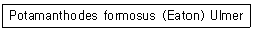
- 발표 당시와 종명이 바뀐 것을 나타낸다.
- 발표 당시와 속명이 바뀐 것을 나타낸다.
- 발표 당시와 과명이 바뀐 것을 나타낸다.
- 발표 당시와 아종명이 바뀐 것을 나타낸다.
(정답률: 64%)
35. 표피를 형성하는 단백질, 지질, 키틴 화합물 등을 합성하고 분비해 주는 한 층의 세포군으로 탈피시에는 내원표피를 소화시키는 탈피액도 분비하는 것은?
- 체색
- 표피층
- 기저막
- 진피세포
(정답률: 66%)
36. 탈바꿈(변태)을 하지 않는 해충은?
- 응애
- 진딧물
- 방패벌레
- 깍지벌레
(정답률: 60%)
37. 농약의 부작용에 대한 설명으로 틀린 것은?
- 잠재곤충이 주요해충으로 등장할 수 있다.
- 먹이사슬에 의한 농약의 축적을 야기할 수 있다.
- 동물상이 복잡해져 생태계의 파괴가 나타난다.
- 약제저항성 해충의 출현으로 약효가 떨어진다.
(정답률: 81%)
38. 다음 중 외국으로부터 유입된 해충이 아닌 것은?
- 벼밤나방
- 벼물바구미
- 온실가루이
- 꽃노랑총채벌래
(정답률: 65%)
39. 곤충의 상호관계에 대한 설명으로 옳은 것은?
- 종내 상호작용은 개체군의 밀도와 관련이 없다.
- 개미와 진딧물의 관계, 식물과 화분매개충의 관계는 편리공생이다.
- 다른 두 종 이상이 먹이와 은신처 등 생활요구자원을 같이 할 때 종간경쟁이 일어난다.
- 곤충에 기생하는 박테리아를 이용하여 해충을 방제할 수 있으나 나비목은 효과가 미비하다.
(정답률: 71%)
40. 곤충의 선천적 행동이 아닌 것은?
- 반사
- 주지성
- 관습화
- 유충의 고치짓기
(정답률: 73%)
3과목: 재배학원론
41. 윤작에 의한 지력 유지 증가에 대한 설명으로 틀린 것은?
- 클로버 같은 콩과작물은 공중질소를 고정한다.
- 순무를 재배하면 잔비량이 많아진다.
- 레드클로버는 뿌리가 얕게 발달하는 작물로서 토양 구조를 좋게 한다.
- 녹비작물을 재배하면 토양유기물이 증대하며, 목초류도 잔비량이 많다.
(정답률: 70%)
42. 다음 중 (가), (나), (다), (라)에 알맞은 내용은?
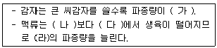
- 가 : 많아진다, 나 : 중부, 다 : 남부, 라 : 남부지역
- 가 : 많아진다, 나 : 남부, 다 : 중부, 라 : 중부지역
- 가 : 적어진다, 나 : 남부, 다 : 중부, 라 : 중부지역
- 가 : 적어진다, 나 : 중부, 다 : 남부, 라 : 남부지역
(정답률: 57%)
43. 종자가 식물학상 과실로 분류되며, 과실이 나출되어 있는 작물에 해당하는 것은?
- 상추
- 귀리
- 벼
- 복숭아
(정답률: 53%)
44. 용질이 첨가될수록 감소하며, 항상 음(-)의 값을 가지는 퍼텐셜은?
- 삼투퍼텐셜
- 압력퍼텐셜
- 매트릭퍼텐셜
- 중력퍼텐셜
(정답률: 70%)
45. 파종시기를 결정하는 요인에 대한 설명으로 틀린것은?
- 내한성이 약한 쌀보리는 만파에 적응을 잘한다.
- 추파성 정도가 높은 품종은 조파하는 것이 좋다.
- 감자는 고랭지에서는 평지보다 늦게 파종한다.
- 고구마는 맥후작보다 단작일 때 빨리 심는다.
(정답률: 48%)
46. 다음은 시설 내의 환경 특이성이다. (가), (나), (다)에 알맞은 내용은?
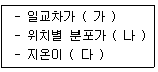
- 가 : 작다, 나 : 다르다, 다 : 높다
- 가 : 작다, 나 : 같다, 다 : 높다
- 가 : 크다, 나 : 다르다, 다 : 낮다
- 가 : 크다, 나 : 다르다, 다 : 높다
(정답률: 55%)
47. 다음 중 복토 깊이를 10cm 이상으로 해야 하는 작물은?
- 콩, 팥
- 옥수수, 완두
- 아네모네 , 잠두
- 수선, 나리
(정답률: 67%)
48. 다음 중 ( ) 에 알맞은 내용은?
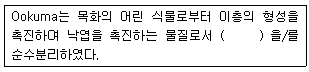
- 사이토카이닌
- 옥신
- ABA
- 지베렐린
(정답률: 73%)
49. 염분이 많은 간척지토양에서 벼 재배법으로 옳지 않은 것은?
- 만식재배를 한다.
- 휴립재배를 한다.
- 논물을 말리지 않으며 자주 환수한다.
- 황산암모니아 비료를 피하고 석회를 충분히 시용한다.
(정답률: 67%)
50. 다음 중 사이토카이닌(cytokinin)류의 키네틴(kinetin)을 발견한 사람은?
- R. Gane
- T. H. Morgan
- C. R. Darwin
- F. Skoog
(정답률: 61%)
51. 다음 중 정착농업을 하면서 초지와 경지 전부를 주곡으로 재배하는 재배법은?
- 휴한농업
- 윤작
- 자유식
- 주곡식 대전법
(정답률: 78%)
52. 다음 중 포기를 많이 띄워서 구덩이를 파고 이식하는 방법은?
- 조식
- 혈식
- 점식
- 난식
(정답률: 58%)
53. 다음 설명의 ( )에 알맞은 내용은?
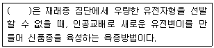
- 교배육종
- 분리육종
- 단순순환선발
- 상호순환선발
(정답률: 81%)
54. 다음 설명의 ( )에 알맞은 내용은?
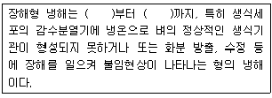
- 유수형성기, 개화기
- 유수형성기, 출수기
- 생육초기, 고숙기
- 생육초기, 출수기
(정답률: 53%)
55. 다음 변이 중 후대에 유전되지 않는 것은?
- 유전적 변이
- 염색체 변이
- 세포질 변이
- 방황 변이
(정답률: 73%)
56. 다음 중 상위성이 있는 경우의 유전자상호작용에서 피복유전자의 분리비는?
- 9 : 7
- 12 : 3 : 1
- 15 : 1
- 9 : 3 : 4
(정답률: 62%)
57. 다음 중 연작의 피해가 상대적으로 가장 작은 것으로만 이루어진 것은?
- 담배, 양파
- 잠두, 토란
- 가지 , 토마토
- 밀, 우엉
(정답률: 60%)
58. 다음 핵외유전의 설명 중 (가), (나), (다)에 알맞은 내용은?
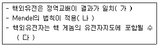
- 가 : 한다, 나 : 된다, 다 : 없다
- 가 : 한다, 나 : 된다, 다 : 있다
- 가 : 하지 않는다, 나 : 되지 않는다, 다 : 없다
- 가 : 하지 않는다, 나 : 되지 않는다, 다 : 있다.
(정답률: 68%)
59. 다음 중 시비량이 증가해도 수량은 증가하지 않는 현상은?
- 수량절감의 법칙
- 최소율의 법칙
- 멘델의 법칙
- 엔트로피의 법칙
(정답률: 62%)
60. 콩과작물에 대한 간이 종자발아력 검사방법으로 사용되는 테트라졸륨법의 TTC용액의 농도로 가장 적합한 것은?
- 0.1%
- 1.0%
- 1.5%
- 10%
(정답률: 60%)
4과목: 농약학
61. BHC제 중 살충력이 가장 강한 γ-BHC 의 광학적 제법에 이서서 가장 적당한 빛의 파장은?
- 100 - 300nm
- 300 - 500nm
- 500 - 700nm
- 700 - 900nm
(정답률: 70%)
62. 마늘, 백합의 뿌리응애 방제에 주로 사용되는 유기인계 약제는?
- 이피엔(EPN)
- 레피멕틴(Lepimectin)
- 디메토에이트(Dimethoate)
- 메타시스톡스(Demeton-S-metyl)
(정답률: 44%)
63. 토마토, 참외와 같은 장기재배형 작물에 적합하며 각종 선충에 전문적으로 적용할 수 있는 유기인계통의 농약은?
- 카보설판
- 포스티아제이트
- 피리프로시펜
- 티아클로프리드
(정답률: 49%)
64. 구리제에 대한 설명으로 틀린 것은?
- 포도의 노균병에 보르도액의 유효함이 알려져 구리제가 사용되게 되었다.
- 유기구리는 구리가 산소원자 및 질소원자와 킬레이트 결합을 하고 있는 것을 말한다.
- 이산화탄소나 유기산 등에 의하여 천천히 구리이온이 방출되어 작물을 보호한다.
- 석회유황합제나 기계유 유제 등과 혼용하면 약효의 증진을 가져온다.
(정답률: 68%)
65. 농용항생제에 대한 설명으로 옳지 않은 것은?
- 다른 미생물의 발육 또는 대사작용을 억제시키는 생리작용을 지닌 물질을 말한다.
- 글리서풀빈(griseofulvin)은 토마토의 궤양병방제제이다.
- 가수가마이신(Kasugamycin)은 단백질 합성을 저해하는 작용을 하는 약제이다.
- 스트렙토마이신(Streptomycin)의 제품은 염산염과 황산염이 주로 사용된다.
(정답률: 50%)
66. 약해의 정류 중 급성약해의 발현시기로 옳은 것은?
- 즉시
- 일주일이내
- 11 - 15일 이내
- 15일 이후
(정답률: 71%)
67. 다음 중 설포닐우레아 게통의 제초제가 아닌 것은?
- 벤설퓨론
- 프로메트린
- 시노설퓨론
- 플라자설퓨론
(정답률: 69%)
68. 다음 제충국의 유효성분 중 집파리에 대한 독성이 가장 큰 것은?
- 피레트린 Ⅰ
- 피레트린 Ⅱ
- 시네린 Ⅰ
- 시네린 Ⅱ
(정답률: 66%)
69. 2, 4-D의 성분 구조는?
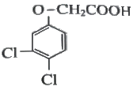
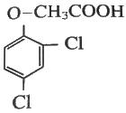
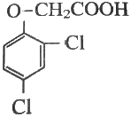
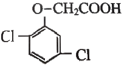
(정답률: 60%)
70. 농약 보조제의 작용으로 전착제가 갖추어야 할 조건으로 가장 거리가 먼 것은?
- 확전성
- 부착성
- 고착성
- 침윤성
(정답률: 62%)
71. 농약의 저항성 발달 정도를 표현하는 저항성계수를 옳게 나타낸 것은?
- 저항성 LD50/ 감수성 LD50
- 감수성 LD50× 저항성 LD50
- 감수성 LD50/ 복합저항성 LD50
- 감수성 LD50× 복합저항성 LD50
(정답률: 67%)
72. 수화제(wettable powder)를 물에 풀면 어떤액이 되는가?
- 유탁액
- 현탁액
- 투명한 수용액
- 유용액
(정답률: 73%)
73. 살포장비에 의한 약해 중 가장 우려되는 원인은?
- 살포장비의 세척
- 살포장비의 종류
- 살포장비의 구조
- 살포장비의 조작방법
(정답률: 81%)
74. 식물의 병반이나 상처부위에 직접 발라서 병을 방제하는 방법은?
- 분의법
- 관주법
- 도포법
- 독이법
(정답률: 81%)
75. 미탁제나 유탁제 등 신규제형이 각광받지 못하는 이유로서 가장 거리가 먼 것은?
- 고가로 인한 경제성 문제
- 환경문제에 대한 인식부족
- 보수적 농민의 선호도 부족
- 인축 독성이 강한 유기용매의 함유
(정답률: 67%)
76. 입제가 갖추어야 할 성질이 아닌 것은?
- 수용성이 커야 한다.
- 토양에 흡착성이 있어야 한다.
- 훈증적인 작용을 갖추어야 한다.
- 토양 미생물에 대하여 안정해야 한다.
(정답률: 51%)
77. 다음 중 입자의 크기가 가장 큰 제형은?
- 입제
- 분제
- 수화제
- 정제
(정답률: 53%)
78. 입제 제조시 사용되는 붕괴촉진제가 아닌 것은?
- 벤토나이트
- 계면활성제
- 전분
- 아교
(정답률: 53%)
79. 50% 밧사 유제(비중 1.0) 100mL로 0.1%의 살포액을 만드는 데 소요되는 물은 몇 L 인가?
- 49.9
- 59.9
- 69.9
- 79.9
(정답률: 75%)
80. 농약의 약효에 대한 설명으로 가장 거리가 먼 것은?
- 농약의 효과는 살포약제의 부착량 및 부착질에 의해 결정된다.
- 약효는 살포량이 어느 한계 이하에서는 살포량과 부착량에 비례한다.
- 살포량이 증가함에 따라 약효 상승률이 점차 떨어진다.
- 실제 포장에서 병해충을 효과적으로 방제하기 위해서는 약효상승율이 “0”인 때의 살포량보다 감량하여 살포하는 것이 안전하다.
(정답률: 60%)
5과목: 잡초방제학
81. 잡초 경합 한계기간에 대한 설명으로 옳은 것은?
- 작물의 경합력이 가장 높은시기
- 작물의 경합력이 크게 필요치 않은 시기
- 작물이 잡초와의 경합에 가장 민감한 시기
- 작물이 잡초로부터 피해를 가장 적게 받는 시기
(정답률: 67%)
82. 다음 중 잡초 종자의 휴면을 유도하는 식물생장조절제는?
- GA
- BA
- ABA
- IAA
(정답률: 73%)
83. 다음 중 논에 주로 발생하는 잡초가 아닌 것은?
- 벗풀, 매자기
- 개구리밥, 가래
- 바랭이, 닭의장풀
- 나도겨풀, 올방개
(정답률: 76%)
84. 농경지에서 발생하는 잡초의 발생초종 구성이 변화하는 천이에 가장 크게 영향을 미치는 요인은?(오류 신고가 접수된 문제입니다. 반드시 정답과 해설을 확인하시기 바랍니다.)
- 시비법
- 작부체계
- 물 관리법
- 제초제 사용
(정답률: 72%)
85. 10%의 유효성분을 가진 A제초제 입제를 1ha당 100g(유효성분) 처리하려고 할 때의 필요한 제초제의 제품량은?
- 0.5 kg/ha
- 1.0 kg/ha
- 1.5 kg/ha
- 2.0 kg/ha
(정답률: 79%)
86. 다음 중 제초제의 휘산과 광분해를 억제하는 데 가장 효과적인 처리방법은?
- 제초제를 경엽에 처리한다.
- 제초제를 토양표면에 처리한다.
- 제초제 처리 후 토양에 혼화시킨다.
- 비가 오기 직전에 제초제를 처리한다.
(정답률: 65%)
87. 작물 생육기간이 100일이면 일반적인 잡초경합 한계기간으로 가장 적합한 것은?
- 파종 및 이식 후부터 10 - 20일 내
- 파종 및 이식 후부터 20 - 30일 내
- 파종 및 이식 후부터 50 - 60일 내
- 파종 및 이식 후부터 60 - 70일 내
(정답률: 75%)
88. 우리나라 논에 발생하는 올방개의 출아가 늦은 이유로 옳은 것은?
- 지하경의 크기가 크기 때문이다.
- 지하경의 종자가 휴면을 일으키기 때문이다.
- 지하경이 불균일하게 분포되어 있기 때문이다.
- 지하경 형성 부위가 깊고 출아하는데 걸리는 시간이 길기 때문이다.
(정답률: 74%)
89. 논에 제초제를 사용할 경우 발생하는 약해의 요인으로 옳지 않은 것은?
- 경운 시기
- 기상 조건
- 이앙 심도
- 물 관리 조건
(정답률: 53%)
90. 다음 중 여러해살이 잡초로만 나열된 것은?
- 나도겨풀, 반하
- 피, 참방동사니
- 바랭이, 알방동사니
- 생이가래, 큰고추풀
(정답률: 60%)
91. 다음 중 가을에 발생하여 월동 후에 결실하는 잡초로만 나열된 것은?
- 쑥, 명아주, 비름
- 별꽃, 뚝새풀, 벼룩나물
- 깨풀, 강아지풀, 민들레
- 애기메꽃, 바랭이, 별꽃
(정답률: 76%)
92. 잡초가 발생하기 전에 시행하는 예방적 방제법에 대한 설명으로 옳지 않은 것은?
- 논물 유입로에는 거름망을 설치한다.
- 외래잡초의 유입을 막는 제도를 마련한다.
- 가축 퇴비를 농경지에 시용하기 전에 충분히 부숙시킨다.
- 잡초 번식 기관인 종자와 영양체 중에서 종자의 유입을 사전에 방지하는 것이다.
(정답률: 46%)
93. 생물적 잡초방제법에 관한 설명으로 옳지 않은 것은?
- 목적은 잡초의 완전한 제거에 있다.
- 비교적 영속성이 있고 환경 친화적이다.
- 미생물 또는 식해성 생물을 이용하여 잡초밀도를 감소시키는 수단을 말한다.
- 경제적으로 무시해도 될 정도의 잡초만 생존하도록 밀도를 감소 조절하는데 있다.
(정답률: 81%)
94. 어떤 논에서 제초제 저항성 잡초로 물달개비가 발견되었따. 이 논의 잡초들은 어떤 게통의 제초제에 대하여 저항성을 나타내는가?
- 페녹시계
- 벤조산계
- 트리아진계
- 설포닐우레아계
(정답률: 57%)
95. 생물학적 잡초방제에 가장 많이 이용되는 식물병원균은?
- 균류
- 선충
- 세균
- 바이러스
(정답률: 61%)
96. 작물과 잡초간의 주요 경합 대상이 아닌 것은?
- 광
- 산소
- 양분
- 수분
(정답률: 81%)
97. 세계적으로 문제가 되는 잡초 종에서 가장 많이 분포하며, 잎집과 잎몸의 이음새에는 막이 있고, 털이 밖으로 생장한 모습의 잎혀가 있으며 잎맥이 평행한 특성을 가진 것은?
- 사초과
- 국화과
- 화본과
- 마디풀과
(정답률: 72%)
98. 생물적 잡초방제를 위한 천적의 특성으로 옳지 않은 것은?
- 천적의 기생식물에는 피해를 주지 않을 것
- 인공적으로 배양 또는 증식이 어려우며 생식력이 약할 것
- 환경에 잘 적응하며 잡초의 적응지역에 적응할 수 있을 것
- 대상 잡초에만 피해를 주고 잡초가 없어지면 천적 자체도 소멸될 것
(정답률: 77%)
99. 다음 설명에 해당하는 제형은?
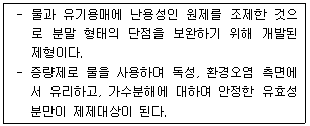
- 수용제
- 수화제
- 입상수화제
- 액상수화제
(정답률: 58%)
100. 식물의 여러 기관에서 특정 물질이 분비되어 주변 식물의 발아나 생육에 영향을 주는 현상은?
- 상호 대립 억제작용
- 상호 대립 길항작용
- 상호 대립 분비작용
- 식물 생장 조절작용
(정답률: 72%)